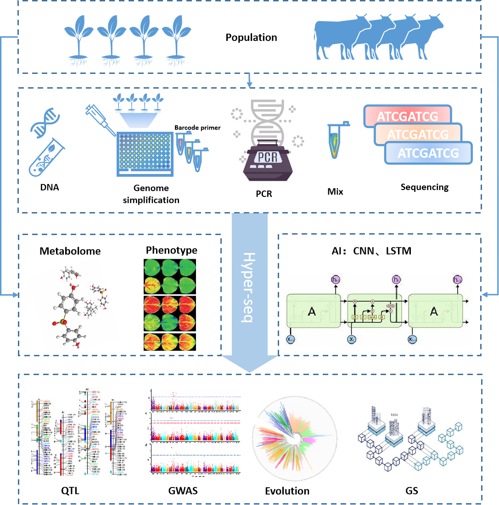
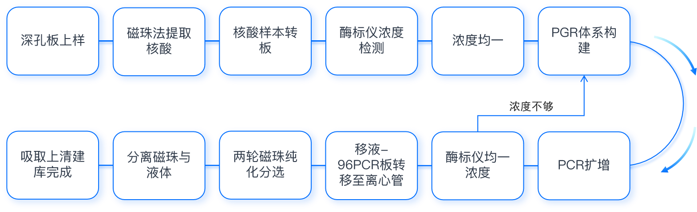
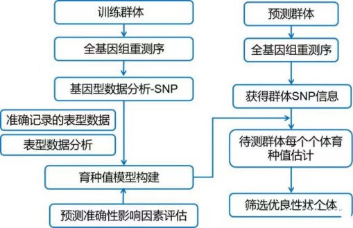
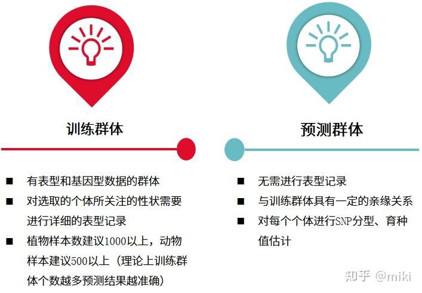

Hyper-seq 超低成本测序技术
极低成本、高效、灵活、高通量的DNA测序文库制备与基因分型技术
Hyper-seq 助力大数据育种变革
通过视频快速了解 Hyper-seq 在高通量、低成本基因分型和智能育种中的应用场景。视频下方继续展示服务介绍、技术优势与适用模式。

Hyper-seq 技术
无需酶切和接头连接，通过一步 PCR 完成简化基因组、Barcode 添加和序列扩增。
.png)
三种核心模式
Hyper-seq-G、Hyper-seq-FD、Hyper-seq-INC 按需覆盖常规育种、大基因组低成本分型和高精度定位。
🏆 技术成就
- 国际发明专利授权（专利号：No.2020/06979）
- 全国颠覆性技术大赛领域赛优秀奖
- 第一届"崖州湾杯"科技创新大赛一等奖
四大核心优势
① 极低成本
- 1G基因组样本，建库测序成本每个样本不到10美元
- 单个样本分析成本50–150元人民币
- 较同类技术成本降低50%以上
② 极简高效
- 仅需一步PCR
- 建库时间缩短至3–5小时
- 无需酶切、无需连接接头
- DNA样品质量要求低
③ 灵活调控
- 灵活调节标记密度
- 内置三种核心模式
- 常规模式、极简模式、高密度模式
- 覆盖全场景应用
④ 高通量
- 单次完成96或384孔样本混合建库测序
- 1000份水稻样品测序仅需一天
- 完全自动化流程
Hyper-seq三种核心模式
| 模式 | 标记覆盖度 | 适用物种 | 典型应用 |
|---|---|---|---|
| Hyper-seq-G | 约10%基因组 | 大多数物种 | 常规育种研究 |
| Hyper-seq-FD | 0.0024–4.2%基因组 | 大基因组物种（小麦、玉米等） | 极低成本育种 |
| Hyper-seq-INC | 约60%基因组 | 所有物种 | 高精度性状定位 |
成功案例
马铃薯同源四倍体基因组研究
发表期刊：Plant Biotechnology Journal (IF=13.8)
利用Hyper-seq对150份四倍体马铃薯进行GWAS分析，成功揭示与块茎肉色显著相关的关键基因。
美人蕉科植物基因组研究
发表期刊：Frontiers in Plant Science (IF=6.627)
对241份美人蕉材料进行分析，检测到1565万个SNP和InDel标记，完成群体遗传结构与叶片性状GWAS分析。
槟榔果实形状GWAS研究
发表期刊：International Journal of Molecular Sciences (IF=5.599)
利用Hyper-seq对槟榔群体进行全基因组关联分析，定位调控果实形状的关键候选基因。
技术流程与应用领域
新鲜叶片或 DNA 样本快速提取
3-5 小时完成建库
96 或 384 样本混合测序
Barcode 拆分与标记检测
GWAS、QTL、指纹图谱、选择育种

建库流程
流程短、兼容性强，适合大规模群体样本快速产出基因型数据。
① 作物遗传背景筛选与回交育种
快速、低成本地筛选回交育种中的遗传背景，精准鉴定目标材料
② 核心种质资源评估与构建
从庞大的种质资源库中快速筛选核心子集
③ DNA指纹图谱与品种鉴定
高准确性、成本低的品种资源多样性评估和纯度鉴定
④ 全基因组关联分析（GWAS）
检测到的分子标记数量远超传统育种芯片
⑤ 遗传图谱构建与QTL定位
灵活可调的标记密度，按需精确锁定目标QTL位点
⑥ 分子标记辅助选择育种
海量SNP/InDel标记注入"大数据基因燃料"
⑦ 基因组选择育种
构建全基因组选择模型，实现精准智能化育种
⑧ 生物安全防控与分子检测
快速分子检测，为检验检疫提供高效技术手段
⑨ 目标关键基因与新候选基因定位
快速锁定目标性状相关的关键基因或新候选基因位点
⑩ 物种鉴定与分类
基因组水平的分子标记比对，实现精准鉴定
送样要求
常见样本建议
| 样本类型 | 建议量 | 说明 |
|---|---|---|
| 植物组织 | GBS/Hyper-seq 类项目建议至少 0.5 g | 优先幼叶、幼芽，避免保存过久和反复冻融 |
| DNA 样本 | GBS 文库总量 > 300 ng，浓度 > 10 ng/μL | 建议提供 Qubit、NanoDrop、凝胶电泳等质控结果 |
| 动物组织 | 大于 0.5 g | 分割后液氮速冻，干冰运输 |
取样提醒
Hyper-seq 对 DNA 样品兼容性较强，但大规模项目更依赖样品一致性。建议采样前统一组织部位、保存方式、样品命名和批次信息。
全基因组重测序
面向种业、动植物、微生物与生态进化研究的全基因组变异检测服务
全基因组重测序是在已有参考基因组的基础上，对个体、品系、群体或菌株进行高通量测序，并通过序列比对和变异检测，系统识别 SNP、InDel、SV、CNV 等遗传变异。该方案适用于种质资源评价、动植物育种、微生物比较基因组、群体进化、环境适应和重要性状解析等方向。
服务流程覆盖样本质控、文库构建、DNBSEQ/高通量平台测序、数据质控、参考基因组比对、变异检测、功能注释和项目报告。分析结果可继续扩展到群体结构、系统发育、选择信号、GWAS、泛基因组或菌株溯源等下游研究。

动植物全基因组重测序
- 服务作物、林木、花卉、中药材、畜禽、水产和野生资源研究
- 支持种质资源评价、遗传多样性、GWAS、QTL 和选择信号分析
- 可结合 Hyper-seq 和 HSmaster 建立高通量育种数据体系
微生物全基因组重测序
- 面向细菌、真菌、病毒和工程菌株比较研究
- 支持耐药基因、毒力因子、质粒结构、菌株分型和传播溯源
- 可用于工业菌种稳定性验证和污染排查
目标区域与候选基因测序
- 聚焦候选基因区、QTL 区间、标记区域或定制目标区域
- 在降低测序成本的同时提高目标区域覆盖深度
- 适合大群体育种筛查、候选位点验证和特定通路研究
基因组从头测序
- 适用于无高质量参考基因组或需要构建新参考的物种
- 可联合长读长、短读长和 Hi-C 等数据提升组装连续性
- 为后续重测序、泛基因组和功能基因挖掘建立基础
多组学扩展
- 可与转录组、表观组、蛋白质组、代谢组和表型数据联合分析
- 适合复杂性状解析和候选基因优先级排序
- 支持 AI 生信科学家自动规划分析流程
案例解析
作物群体变异解析
对自然群体、杂交后代和核心种质进行全基因组重测序，建立高质量变异集，结合农艺表型筛选性状相关位点与候选基因。
作物种质资源评价
对栽培种、地方品种和野生近缘种进行群体重测序，解析群体结构、遗传多样性和驯化选择信号。
畜禽水产育种研究
围绕生长、繁殖、抗病、肉质和环境适应等性状开展群体变异检测，为基因组选择提供标记资源。
农业与环境菌株比较
对根际菌、发酵菌、工程菌和环境菌株进行全基因组比较，分析功能基因、质粒结构、基因组稳定性和系统发育关系。
结果展示
项目交付包括原始数据质控报告、比对统计、覆盖度分布、变异检测结果、功能注释表、图形化统计结果和项目总结报告。群体项目可进一步输出 PCA、群体结构、系统发育树、LD 衰减、选择信号、GWAS 曼哈顿图与候选基因列表。

主要交付结果
| 结果类型 | 内容 | 用途 |
|---|---|---|
| 数据质控 | Q30、GC、过滤 reads、测序深度和覆盖度 | 评估数据可靠性 |
| 变异检测 | SNP、InDel、SV、CNV 及注释文件 | 构建高质量变异资源 |
| 群体分析 | PCA、ADMIXTURE、系统发育、遗传多样性 | 解析群体关系与进化背景 |
| 功能分析 | 基因注释、GO/KEGG 富集、候选基因筛选 | 支撑论文与后续实验验证 |
送样建议
不同样本类型需提前确认物种、组织来源、保存状态、样本量和项目目标。
| 样本类型 | 建议量 | 注意事项 |
|---|---|---|
| DNA 样本 | 总量 > 400 ng，浓度 > 24 ng/μL | 建议 Qubit 定量，提供 NanoDrop、凝胶或 Agilent 质控结果 |
| 植物组织 | WGS 文库至少 0.2 g，总体建议 2 g 以上 | 优先幼叶、幼芽，避免反复冻融和长期保存 |
| 动物组织 | 大于 0.1 g | 肌肉、鳍条、羽毛、耳组织等材料需冰上处理，液氮速冻或 -80℃ 保存，干冰运输 |
| 细胞样本 | 细胞量 > 5×106 | 优先生长对数期细胞，离心去上清后液氮速冻 |
| 微生物/环境样本 | 按项目确认 | 提前说明培养条件、样本来源、菌株用途和保存方式 |
送样提醒
为保证 DNA 质量和项目进度，请尽量统一采样部位、保存方式和样品命名；微生物样本需提前沟通培养条件、菌株来源和运输方式。
常见问题
如何选择测序深度？
单个样本精细变异检测通常需要更高深度；大群体研究可根据群体规模、基因组大小和目标分析选择低至中深度方案。
没有参考基因组怎么办？
可先开展基因组从头测序构建参考，也可选择近缘物种参考基因组进行探索性分析，但结果解释需更谨慎。
重测序和 Hyper-seq 如何选择？
全基因组重测序覆盖更完整，适合系统变异发现；Hyper-seq 成本更低、通量更高，适合大规模育种分型和标记筛选。
是否支持后续个性化分析？
支持。可根据项目目标扩展 GWAS、选择信号、群体历史、菌株溯源、多组学关联和 AI 辅助报告解读。
实验流程开发与技术支持
依托原创技术，定制全流程实验方案
依托公司原创技术优势，为客户定制实验流程（如Hyper-seq实验流程），提供技术培训、流程植入、后续技术支持等服务（如协议相关合作内容）；同时可结合客户实验室硬件配置，提供实验流程适配性开发、技术问题解答、实验人员实操指导等全流程支持。
定制实验流程
- 基于Hyper-seq等原创技术定制专属实验方案
- 结合客户实验室硬件配置进行流程适配
- 实验流程优化与标准化
技术培训与植入
- 实验人员实操指导与培训
- 流程植入与实验室体系对接
- 技术问题全程解答
后续技术支持
- 协议相关的长期合作支持
- 实验流程持续优化与迭代
- 新技术同步更新服务
AI农业领域定制
AI赋能农业科研与产业应用
结合人工智能技术与农业科研/产业需求，定制化开发农业相关AI分析模型（如作物性状预测、育种数据挖掘、病虫害分子检测AI识别等），提供模型训练、部署及后续技术优化，助力AI在农业领域的落地应用。
作物性状预测
- 基于多组学数据构建产量、品质等性状预测模型
- 整合环境与表型数据的智能预测
- 育种决策辅助支持
育种数据挖掘
- 大规模基因型-表型关联分析
- 基因组选择模型构建与优化
- 关键候选基因智能筛选
AI分子检测
- 病虫害分子检测AI识别
- 智能图像识别与诊断
- 自动化检测流程开发
模型部署与优化
- 模型训练与部署服务
- 后续技术优化与迭代
- 定制化AI解决方案